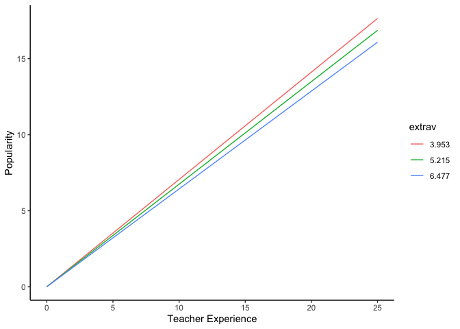
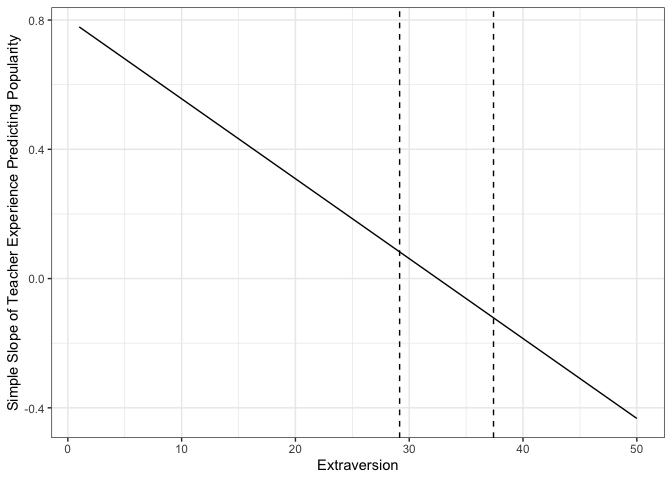

Guest Post: Interpreting Interactions in Multilevel Models
This is a guest post by Jeremy Haynes, a doctoral student at Utah State University.
Contents
Fitting Model and Specifying Simple Intercepts and Simple Slopes
| Model 1 | ||
|---|---|---|
| (Intercept) | -1.21*** | |
| (0.27) | ||
| sexgirl | 1.24*** | |
| (0.04) | ||
| extrav | 0.80*** | |
| (0.04) | ||
| texp | 0.23*** | |
| (0.02) | ||
| extrav:texp | -0.02*** | |
| (0.00) | ||
| AIC | 4798.45 | |
| BIC | 4848.86 | |
| Log Likelihood | -2390.23 | |
| Num. obs. | 2000 | |
| Num. groups: class | 100 | |
| Var: class (Intercept) | 0.48 | |
| Var: class extrav | 0.01 | |
| Cov: class (Intercept) extrav | -0.03 | |
| Var: Residual | 0.55 | |
| p < 0.001, p < 0.01, p < 0.05 | ||
Write out model equation yij = γ00 + γ10Xij + γ20Xij + γ01Zj + γ21XijZj + μ0j + μ2j + e*i**j*
Separate fixed effects from random effects yij = (γ00 + γ10Xij + γ20Xij + γ01Zj + γ21XijZj) + (μ0j + μ2j + e*i**j*)
Derive prediction equation E[y|X, Z] = γ̂00 + γ̂10Xij + γ̂20Xij + γ̂01Zj + γ̂21X*i**jZj*
Separate simple intercept from simple slope - this indirectly defines the focal predictor and moderator E[y|X, Z] = (γ̂00 + γ̂10Xij + γ̂20Xij) + (γ̂01Zj + γ̂21X*i**jZj*)
Formally define focal predictor (Level 2: Z) and moderator (Level 1:
- E[y|X, Z] = (γ̂00 + γ̂10Xij + γ̂20Xij) + (γ̂01 + γ̂21X*i**j)Zj*
- E[y|X, Z] = (γ̂00 + γ̂10Xij + γ̂20Xij) + (γ̂01 + γ̂21X*i**j)Zj*
Define simple intercept (ω0) and simple slope (ω1) ω0 = γ̂00 + γ̂10Xij + γ̂20Xij
ω1 = γ̂01 + γ̂21X*i**j*
Methods of Probing Interactions (Preacher et al., 2006)
Simple Slopes Technique
- Specify conditional values of X (EXT) to evaluate significance for simple slope of y regressed on Z (TEXP)
- For continuous variables, this requires the “pick-a-point” method (Rogosa, 1980)
- First, I get some descriptives and will use the mean, +1 SD, and -1 SD (Cohen & Cohen, 1983)
- Values of 3.953, 5.215, and 6.477 for X
ω1 = γ̂01 + γ̂21X*i**j*
| Statistic | N | Mean | St. Dev. | Min | Pctl(25) | Pctl(75) | Max |
| extrav | 2,000 | 5.215 | 1.262 | 1 | 4 | 6 | 10 |
low = mean(popularity$extrav, na.rm = FALSE) - sd(popularity$extrav, na.rm = FALSE)
mid = mean(popularity$extrav, na.rm = FALSE)
upp = mean(popularity$extrav, na.rm = FALSE) + sd(popularity$extrav, na.rm = FALSE)
modelSum = summary(model)
omegaLow = modelSum$coefficients[3] + modelSum$coefficients[5] * low
omegaMid = modelSum$coefficients[3] + modelSum$coefficients[5] * mid
omegaUpp = modelSum$coefficients[3] + modelSum$coefficients[5] * upp- Calculate standard error of ω̂1
- Variance of ω̂1
var(ω̂1|z) = var(γ̂01) + 2*Xcov(γ̂01, γ̂21) + X2va**r(γ̂*21)
- Covariance matrix
vcov(model)## 5 x 5 Matrix of class "dpoMatrix"
## (Intercept) sexgirl extrav texp extrav:texp
## (Intercept) 7.392993e-02 1.764158e-05 -9.462046e-03 -4.187639e-03 5.370955e-04
## sexgirl 1.764158e-05 1.312796e-03 -9.458320e-05 -2.852607e-05 3.075874e-06
## extrav -9.462046e-03 -9.458320e-05 1.609389e-03 5.400536e-04 -9.232641e-05
## texp -4.187639e-03 -2.852607e-05 5.400536e-04 2.824846e-04 -3.686219e-05
## extrav:texp 5.370955e-04 3.075874e-06 -9.232641e-05 -3.686219e-05 6.526482e-06- Calculate SE of ω̂1 for each value of X
- Form critical ratios for each value of X
\[t = \\frac{\\hat\\omega\_1 - 0}{SE\_{\\hat\\omega\_1}}\]
- Calculate *d**f* and critical t-values
Degrees of freedom = N − p − 1
Critical t-values
- Determine significance
- If any of the t-values are above or below ± t-crit, respectively, then the simple slope of the focal predictor (Z) is significant at that conditional value of X
paste("t-crit:", tCrit)
paste("t-value for lower conditional value:", tLow)
paste("t-value for middle conditional value:", tMid)
paste("t-value for upper conditional value:", tUpp)## [1] "t-crit: -1.96116040314397" "t-crit: 1.96116040314397"
## [1] "t-value for lower conditional value: 22.5300221770147"
## [1] "t-value for middle conditional value: 23.5026768695656"
## [1] "t-value for upper conditional value: 24.5447253519584"- Plot that S**t
- Calculating predicted values
simpleData = bind_rows(
data.frame(texp = c(0:25)) %>% mutate(extrav = 5.215 - 1.262),
data.frame(texp = c(0:25)) %>% mutate(extrav = 5.215),
data.frame(texp = c(0:25)) %>% mutate(extrav = 5.215 + 1.262)) %>%
mutate(popularity = (modelSum$coefficients[3] + modelSum$coefficients[5] * extrav) * texp,
extrav = factor(extrav))- Plot

Conclusion: The slope of teacher experience is significantly different from 0 at 1 SD of the mean and at the mean of extraversion.
Johnson-Neyman Technique
- Start with the t-statistic
\[\\pm t = \\frac{\\hat\\omega\_1}{SE\_{\\hat\\omega\_1}}\]
Expand
\[\\pm t = \\frac{(\\hat\\gamma\_{01} + \\hat\\gamma\_{21}X)}{var(\\hat\\gamma\_{01}) + 2Xcov(\\hat\\gamma\_{01}, \\hat\\gamma\_{21}) + X^2 var(\\hat\\gamma\_{21})}\]
- Find values of X that solve for t
- X can be found by solving the following quadratic (Carden, Holtzman, Strube, 2017):
\[X\_{lower}, X\_{upper} = \\frac{-b \\pm \\sqrt{b^2 - 4ac}}{2a}\]
where
a = tα/22Var(γ̂21) − γ̂32,
b = 2tα/22Cov(γ̂1, γ̂21) − 2γ̂1γ̂21,
c = tα/22Var(γ̂1) − γ̂12
a = qt(.025, df)^2 * .000006526482 - modelSum$coefficients[5] ^ 2
b = 2 * qt(.025, df)^2 * -.00009232641 - 2 * modelSum$coefficients[3] * modelSum$coefficients[5]
c = qt(.025, df)^2 * .001609389 - modelSum$coefficients[3]^2
# Functions for solving quadratic equation (Hatzistavrou, https://rpubs.com/kikihatzistavrou/80124)
# Constructing delta
delta = function(a, b, c){
b^2 - 4*a*c
}
# Constructing Quadratic Formula
result = function(a, b, c){
if(delta(a, b, c) > 0){ # First case where Delta > 0
x1 = (-b + sqrt(delta(a, b, c)))/(2*a)
x2 = (-b - sqrt(delta(a, b, c)))/(2*a)
return(c(x1, x2))
}
else if(delta(a, b, c) == 0){ # Second case where Delta = 0
x = -b/(2*a)
return(x)
}
else {"There are no real roots."} # Third case where Delta < 0
}The regions of significance for the slope of teacher experience, conditioned on extraversion are significant beyond 29.1564177269881 and 37.4077675641277 points of extraversion. This is outside the range of extraversion; therefore, the slope of teacher experience is significantly different from 0 at all values of extraversion.
- Plotting
- Calculating estimates of the slope for teacher experience as a function of extraversion
jnData = data.frame(extrav = c(1:50)) %>%
mutate(texp = modelSum$coefficients[3] + modelSum$coefficients[5] * extrav)
jnData %>%
ggplot() +
aes(x = extrav,
y = texp) +
geom_line() +
theme_bw() +
labs(x = "Extraversion",
y = "Simple Slope of Teacher Experience Predicting Popularity") +
theme(legend.key.width = unit(2, "cm"),
legend.background = element_rect(color = "Black"),
legend.position = c(1, 0),
legend.justification = c(1, 0)) +
geom_vline(xintercept = c(result(a, b, c)), linetype = 2)